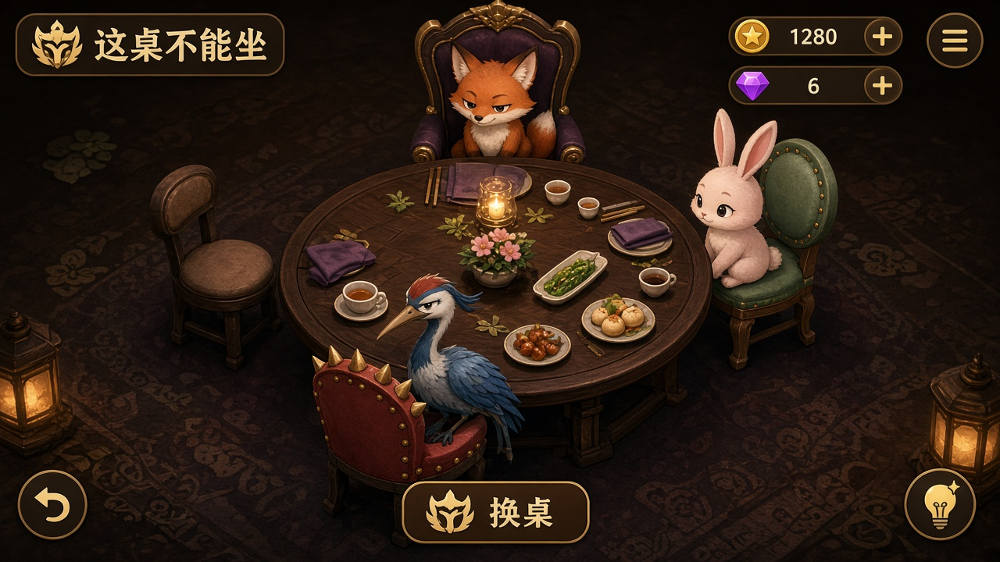
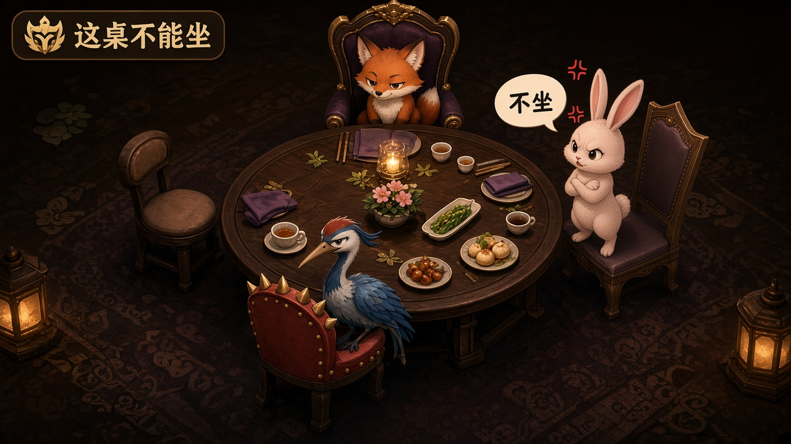
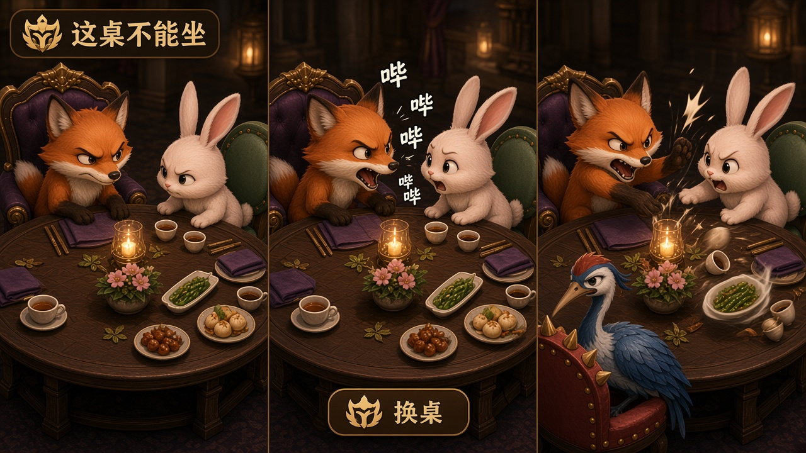
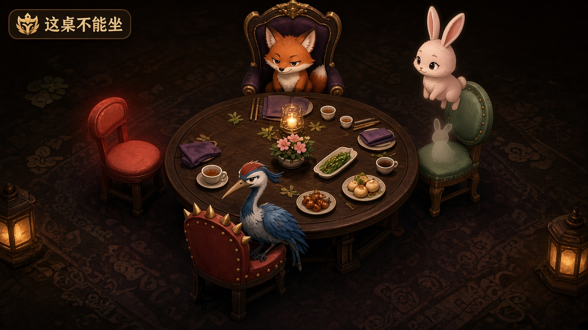
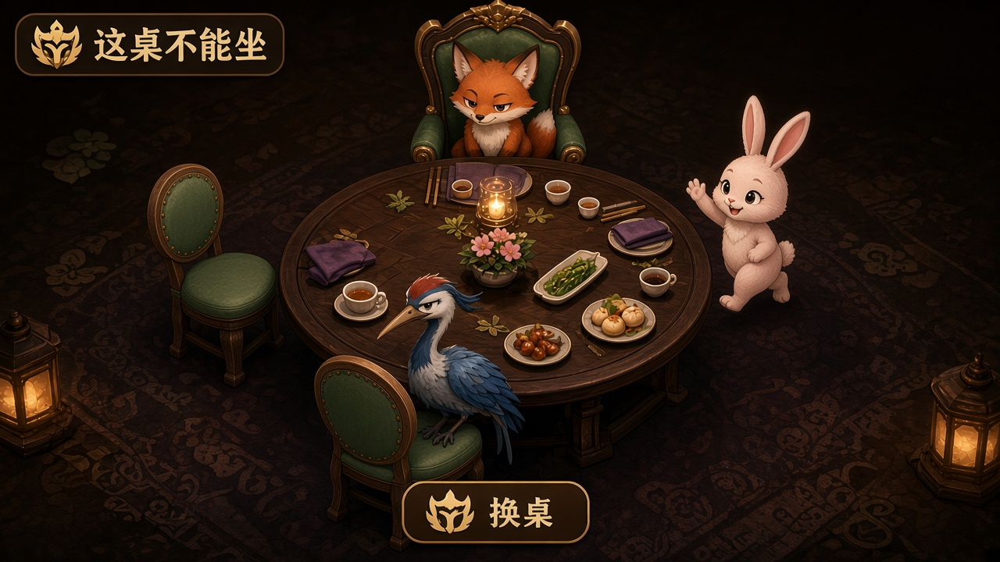
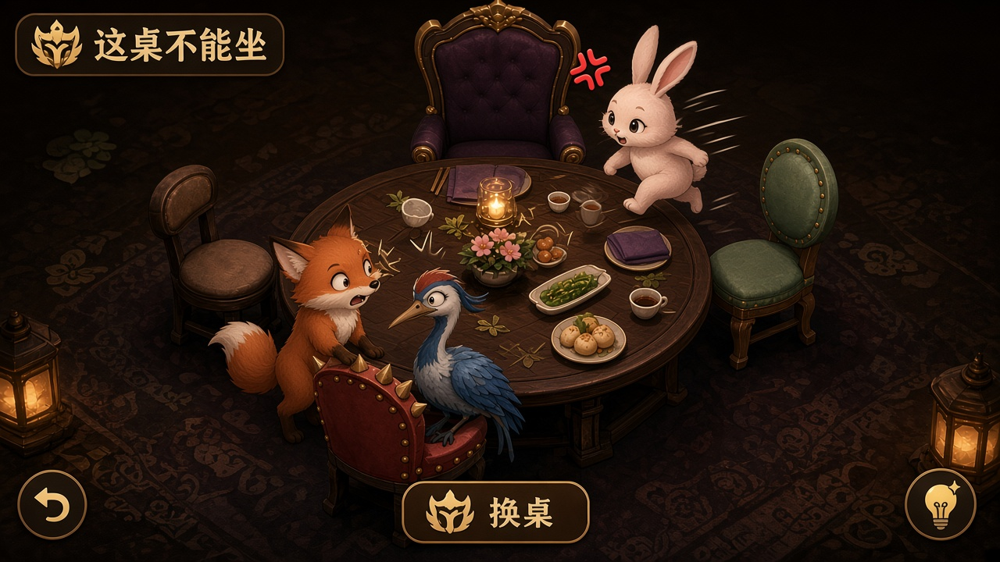

画图模型正式稿 · 主交付旧 concept/ 线框仅内部参考 · 正式主链 https://zhousong-xd.github.io/demo001/
固定一桌 · 体验与交互设计稿
T-063 · 小搞 · 拒坐 · 吵架升级 · 换座走路遇人 · GenerateImage

01 一桌总览（正式感）

02 见仇人：站着「不坐」

03 吵架升级（多格）

06 拿起 + 悬停预演（交互稿）

04 换座走路 · 遇友打招呼

05 换座走路 · 遇仇人撞一下
路径：banquet-pilot/candidates/presentation-sample/mockups/ · 公网目标 presentation/mockups/